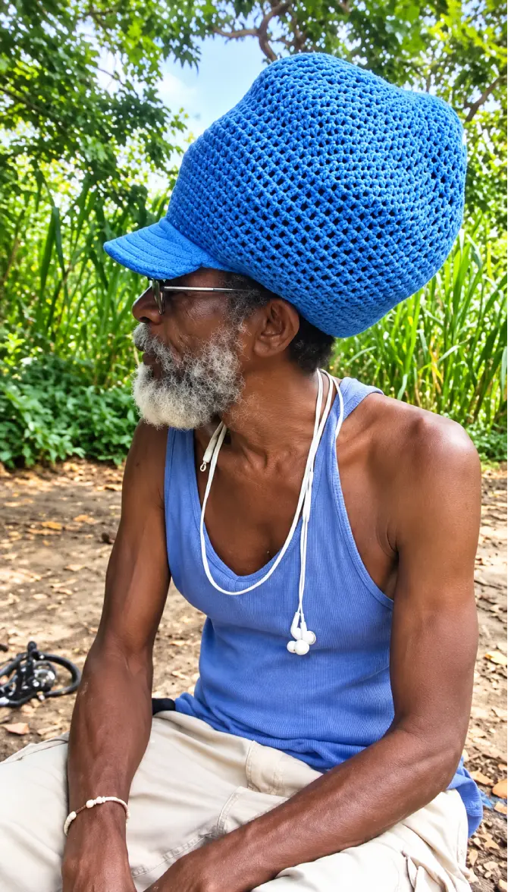
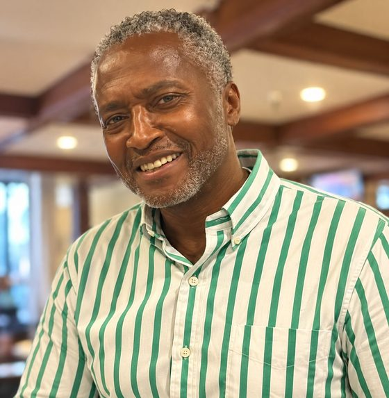

Our Team

The people
behind the
knowledge tree.
Greetings, distinguished individuals. Kwik Fat Cut was built by people who live what they teach — with a combined commitment to health, resilience, and education that goes back decades.
The Leadership
Built with
purpose.
Kwik Fat Cut was not created by a marketing team or a tech startup looking for a health niche. It was built by a CEO with over 55 years of real-world experience and a deep-rooted commitment to ancestral health wisdom, and a CFO who brought deliberate, strategic development to make it a lasting platform.
Together, they built something that was never meant to sell products — only to educate people.

CEO & Creator
Wilbert Blackwood
Known as Honey Ras — Man Rasta — Online: Man Rasta 🇯🇲
Greetings. My name is Honey Ras — also known online as Man Rasta. As a proud native of the Caribbean, I bring a diverse and extensive professional background to everything Kwik Fat Cut represents.
I am an electronic technician specialising in audio and video equipment, with over 55 years of proven experience in installing, repairing, and troubleshooting complex electrical systems. That discipline — precision, patience, understanding how systems work before intervening — is the same philosophy I bring to health education.
I offer personalised guidance on developing comprehensive health routines, daily wellness programmes, and nutritional plans. As a committed Rastafarian, I regularly practice meditation, chanting, and herbal remedies — embodying the spiritual practices of Rastafari in daily life, not just in words.
My dedication to helping others is unwavering. I freely share knowledge on the Kwik Fat Cut education-first platform and actively support community initiatives including local health fairs and youth food-mentoring programmes. We cannot do this alone. We row together. You steer.

CFO — Chief Financial Officer & Co-Developer
Glenn Bailey
The strategic foundation behind Kwik Fat Cut’s development
Glenn Bailey’s story begins in the United Kingdom, where he was born after his family migrated from Jamaica in the early 1950s. In time, Glenn made his own journey — back to the island his family came from. He settled in Kingston, in the Parish of St. Andrew, where he spent most of his formative years, attending basic elementary school and growing up in one of Jamaica’s most vibrant, culturally rich communities.
From St. Andrew, Glenn’s path continued. He migrated to the United States, where he pursued his education at Long Island College — bringing with him a mind that had always leaned toward enterprise. Glenn was born with an entrepreneur’s instinct: the drive to build, to create, and to see opportunity where others see obstacles.
That instinct is visible in everything he does. Glenn currently designs clothing privately — T-shirts, hoodies, sweat suits, shorts, and more — a creative dimension that runs parallel to his strategic work and reflects the same discipline: attention to quality, commitment to craft, and the refusal to do anything halfway.
As CFO of Kwik Fat Cut, Glenn’s role goes well beyond the financial. His deliberate, purposeful involvement in the development of the platform reflects a conviction that health education built with integrity requires the same rigour as any serious enterprise — planned carefully, built sustainably, and guided by values rather than short-term gains. He co-developed this platform alongside Wilbert Blackwood with a shared commitment to health education and long-term resilience.
Together, the leadership of Kwik Fat Cut is grounded in one principle: education before intervention, and people before products. That is not a marketing position. It is the foundation everything else is built on.
“I am honoured to be a partner with Glenn Bailey — a man whose journey from Kingston’s Parish of St. Andrew to Long Island College, and back to this mission, speaks for itself.”
Wilbert Blackwood — CEO & Founder, Kwik Fat Cut
Shared Commitment
Health.
Resilience. Education.
Kwik Fat Cut was created by people who live these values — not as a brand positioning exercise, but as a daily practice. The platform is a direct extension of the lives, beliefs, and decades of experience its founders bring to it.
Kwik Fat Cut — Education First — We row. You steer.
Join the family.
Start free. Learn first. No pressure, no body shaming, no barriers.